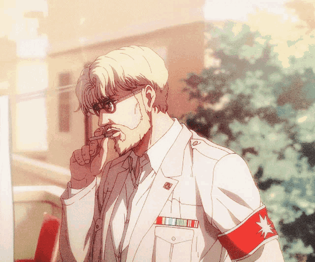

Zeke Jaeger es un personaje complejo y fundamental en Shingeki no Kyojin, conocido por ser el medio hermano de Eren Jaeger y por su apodo "La Bestia Titán".
Como poseedor del poder del Titán Bestia, Zeke destaca por su habilidad para lanzar proyectiles con una precisión letal y la capacidad de transformar a los eldianos en titanes mediante su grito,
utilizando su fluido espinal. Inicialmente presentado como un antagonista, Zeke es un estratega brillante y un líder formidable del ejército de Marley,
aunque sus verdaderas intenciones y la profundidad de su carácter se desvelan a medida que avanza la serie.
Zeke tiene una visión radical sobre la salvación de la humanidad, influenciada por su traumática infancia y la relación conflictiva con sus padres,
quienes lo usaron como una herramienta para sus propios ideales. A lo largo de la historia, su relación con Eren y su complejo plan para el futuro de los eldianos revelan un personaje lleno de matices,
con convicciones profundas y una voluntad implacable para alcanzar sus objetivos. Zeke no solo lucha por sus propias creencias, sino que también se enfrenta a sus propios demonios internos,
convirtiéndolo en una figura trágica y fascinante dentro del universo de Shingeki no Kyojin.
